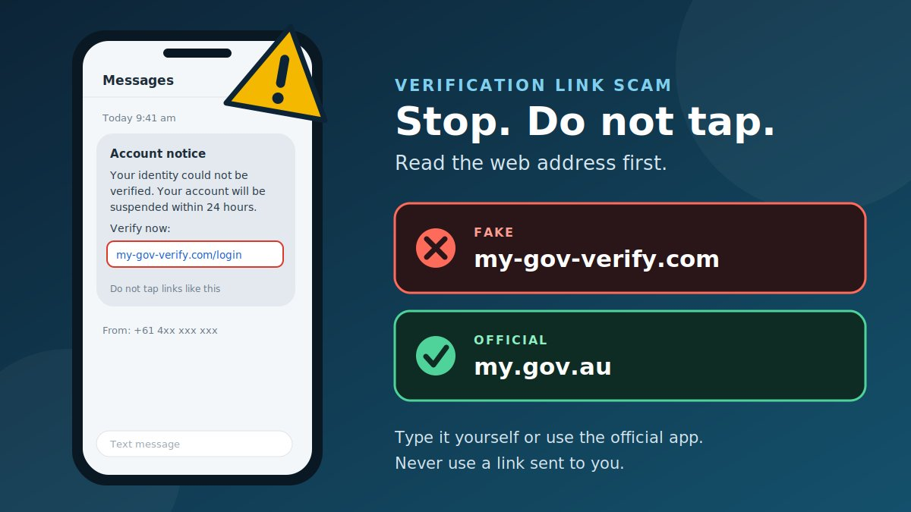

A text arrives that says your myGov account could not be verified and will be suspended unless you act today. It has a link, a deadline, and a tone that sounds official. For millions of Australians who use myGov for Centrelink, Medicare, the ATO, and more, that is a worrying message. It is also exactly what scammers are counting on.
How fake myGov verification scams work
These scams copy the look and language of government messages. The goal is to get you onto a fake website that looks like the myGov sign-in page, or to get you to read out your details over the phone.
- The message. A text, email, call, or social media message says your account needs verifying, has inaccurate details, is locked, or is about to be closed.
- The pressure. There is a deadline and a consequence, such as suspension, a lost payment, or a penalty.
- The link. It opens a page that copies the myGov look. Some fake pages go further and ask you to pick your bank and sign in to it.
- The capture. Your username, password, codes, and bank details go to the scammer, who can then try to sign in to myGov and your linked services, or take money.
Where the scam can reach you
| Channel | What it often looks like | What the scammer wants |
|---|---|---|
| Text message | "Your account is locked. Verify now" plus a link | Your myGov sign-in details |
| A notice about a cancellation, payment, or missing information with a button | Your sign-in details or bank login | |
| Phone call | A caller or recorded voice claiming to be myGov or Centrelink | Your details, codes, or remote access to your device |
| Social media | A direct message from a fake government profile | To move you to a link or private chat |
| Fake website or ad | A lookalike site that appears in an ad or a link | Anything you type into it |
What Services Australia says it will and won't do
This is the strongest tool you have, because it turns "does this look real?" into a simple yes-or-no check. According to Services Australia, genuine contact will not do the following.
- Send you a link in a text message or email.
- Ask you to open an attachment in a text or email.
- Ask you to reply with personal information or your myGov sign-in details.
- Ask for access to your phone, tablet, or computer.
- Threaten to deactivate your myGov account or your records.
- Threaten you with fines, arrest warrants, or jail.
What it does do is tell you about new messages in your myGov Inbox, updates on claims and payments, and reminders about reporting and appointments. When myGov does contact you, it asks you to sign in using the official app or by entering my.gov.au in your browser.
On the phone, Services Australia says genuine calls will not ask for your myGov password, PIN, or secret answers, will not play a recorded message telling you to press 1, and will not come from a visible mobile number. If your caller ID says "myGov" or "Centrelink," it is not them.
Warning signs of a fake myGov message
- It contains a link or attachment. This alone is enough to be suspicious.
- It says "verify," "confirm," or "unlock" your account or identity.
- It threatens to suspend or close your myGov account, or to stop your payments.
- It asks for your username, password, or login code, or for bank details.
- It comes from an ordinary mobile number or a free email address.
- It threatens fines, arrest, or legal action.
- It asks you to chat on WhatsApp, Telegram, or WeChat, or to install an app or share your screen.
- The sign-in page asks you to pick your bank. myGov sign-in has nothing to do with your bank login.
- The address is not my.gov.au. Sender names can be faked, so never rely on the name alone.
How to check a suspicious link
The safest check is not to tap the link at all. If you want to understand it, follow these steps without opening it.
- Do not tap. Press and hold the link, or open the message details, to read the full address without opening it.
- Find the domain. It is the part right after
https://and before the first single/. Inhttps://my.gov.au.verify-id.com/login, the real site isverify-id.com, not myGov. - Read the ending first. The last parts decide who owns the page. Anything in front of them can be made up.
- Compare with the official address. myGov's address is
my.gov.au. Lookalikes add words, hyphens, or a different ending, such asmygov-verify.com. - Do not trust the padlock. https only means the connection is encrypted. Fake pages can have it too.
- Be wary of shortened links like bit.ly, which hide the destination.
- Remember the bigger rule. Even a link that looks correct should not be in a text or email claiming to be from Services Australia. Type the address yourself instead.
Try the link red-flag scanner
Paste a link you received. The tool reads the address only. It does not open the link, and nothing you paste leaves your browser.
Realistic examples
These are composite examples written to show the pattern. They are not reports about real people. Australian technology news sites have reported scam texts claiming account details are "inaccurate," emails about a "cancellation notice," and fake pages that ask you to select your bank, so these patterns are not far-fetched.
How to access myGov safely
You can avoid almost all of these scams by changing how you reach myGov. Make these habits automatic.
- Use the myGov app, or type
my.gov.auinto your browser's address bar yourself. Do not use links from messages, and be cautious about ads, because fake pages can be promoted online. - Check the address bar before entering anything. It should show
my.gov.au. - Use a stronger sign-in option. myGov offers passkeys and Digital ID. Services Australia advises that if you use one of these, you can turn off your password as a sign-in option, which removes a way for scammers to get in.
- Complete the security review that appears after you sign in, if you see it.
- Sign in only on trusted devices and private networks, and sign out of myGov and your linked services when you finish.
- Check your account history from time to time. Sign in, go to Account settings, then Account history. It shows recent activity, such as sign-ins and changes to your settings.
- Never share your passkey, password, PIN, secret answers, or codes with anyone. Services Australia's terms say you are responsible for keeping them safe.
More prevention tips
- Treat any unexpected message that mentions myGov, Centrelink, Medicare, the ATO, or Child Support as unverified until you check through the official app or website.
- Do not reply to the message, even to say "stop." Replying confirms your number is active.
- If you are not sure whether a call is real, hang up and call the agency on its published number.
- Use a different password for myGov than for your email and banking, or better, use a passkey or Digital ID.
- Keep your phone and apps updated, and lock your device with a PIN or biometrics.
- Tell family members, especially older relatives and people who are new to online services, that government agencies do not send sign-in links.
What to do if you have been scammed
If you clicked, replied, or gave details, act quickly. There is no shame in this. Scams are designed to fool careful people.
If you only clicked or tapped the link
- Close the page. Do not enter anything.
- Do not reply to the message, and do not call any number in it.
- Sign in to myGov only through the app or by typing my.gov.au, and check your account history.
- If you installed something, uninstall it, and consider running a security scan.
If you entered your myGov details or gave them over the phone
- Secure your account. Sign in through the official app or my.gov.au. Check your account history and linked services for changes you do not recognise, such as a new email, phone number, passkey, or bank details.
- If there is activity you did not do, Services Australia says the safest step is to close the myGov account, then create a new one with a new passphrase and relink your services. Change your sign-in method to a passkey or Digital ID.
- Call the Services Australia Scams and Identity Theft Helpdesk (open Monday to Friday, 8 am to 5 pm AEST or AEDT). The number is listed on the Services Australia scams page. If you have given out PRODA details, call PRODA Support as well.
- If you notice changes in a linked service, such as Centrelink, Medicare, or the ATO, contact that service on its usual number.
- Change the password on any account that uses the same password.
If you shared bank details or lost money
- Contact your bank straight away using the number on your card or in your banking app, and ask them to secure your accounts and try to stop any payment.
- Call IDCARE on 1800 595 160 for free help with identity theft and cyber incidents, including a plan to limit the damage.
- Report it: use Scamwatch, and use ReportCyber if you lost money or personal information. You can also make a police report online.
- Check your credit reports with a credit reporting agency for accounts or applications you did not make. If your tax identity may be affected, contact the ATO.
- If you are unhappy with your bank's response, you can complain to the Australian Financial Complaints Authority (AFCA).
Report the scam to help others
Forward the message, or send a screenshot, to reportascam@servicesaustralia.gov.au. Reporting helps agencies warn and protect other people. Be careful about anyone who contacts you offering to get your money back, because that is a common follow-up scam.
Being scammed can leave you feeling anxious or embarrassed. If you need to talk to someone, you can call Lifeline on 13 11 14 or Beyond Blue on 1300 22 4636.
Conclusion
The fake myGov verification link scam works because it sounds routine and urgent. The defence is simple and does not depend on spotting every clever trick. Services Australia does not send links in texts or emails, so any message that asks you to "verify" through a link can be ignored. Open the myGov app or type my.gov.au yourself, check your Inbox, and use a passkey or Digital ID where you can.
The same trick appears in other forms. Read our guides on the fake digital identity verification link scam, the fake QR code verification scam, and the fake AI customer support chat scam. Some of those guides include India-specific reporting steps, so use the Australian contacts above if you are in Australia.
Got a message you are unsure about? Paste the message text into our free checker for a quick first read.
Frequently asked questions
What is a fake myGov verification link scam?
It is a scam where a text, email, call, or social media message pretends to be myGov or Services Australia and asks you to "verify" your account through a link. The link leads to a fake sign-in page that steals your myGov username, password, codes, or bank details.
Does myGov or Services Australia send links in texts or emails?
No. Services Australia says it does not send links in text messages or emails, and does not ask you to open attachments or reply with your personal details or myGov sign-in details. Genuine messages tell you to check your myGov Inbox.
How do I sign in to myGov safely?
Use the myGov app, or type my.gov.au into your browser yourself. Do not use links from messages, and check the address bar before you enter anything. Where possible, use a passkey or Digital ID instead of a password.
What should I do if I clicked a fake myGov link or entered my details?
Stop, sign in to myGov only through the official app or my.gov.au, check your account history, and change your sign-in method. Call the Services Australia Scams and Identity Theft Helpdesk, contact your bank if you shared financial details, and contact IDCARE for support.
Where do I report a myGov scam in Australia?
Forward the message or send a screenshot to reportascam@servicesaustralia.gov.au. You can also report to Scamwatch, and to ReportCyber if you lost money or personal information.
Got a myGov message you want checked?
Run it through the checker